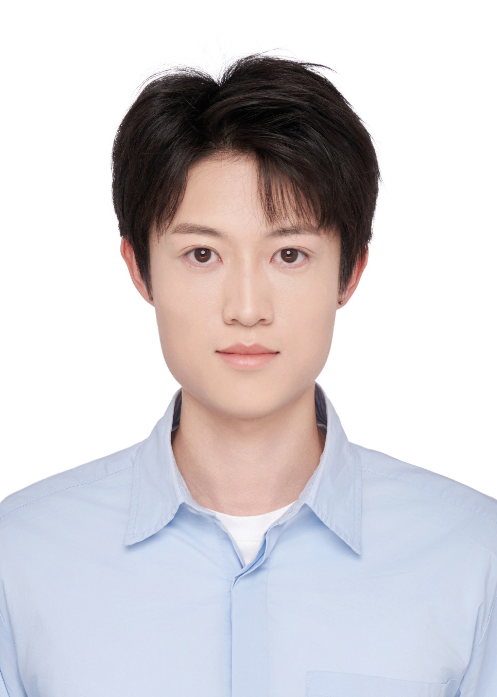

Yinting (Justin) Huang
University of Cambridge
Hi! I am a PhD student at the CASCADE Research Centre, supervised by Professor Timothy Jones. My research interests lie in computer systems and memory architecture, particularly in addressing performance bottlenecks through hardware-software co-design and by exposing more information across traditional abstraction boundaries.

Hardware–software co-design for prefetching
Existing hardware prefetchers are typically specialised for particular access patterns and make limited use of the rich program context available to compilers. My research aims to bridge this gap by combining compiler-derived knowledge of program intent with dynamic runtime information, enabling a more universal prefetching architecture that can capture a broader range of memory-access patterns, hide memory latency more effectively, and use hardware resources more efficiently than conventional fixed-function designs.
Research output
Academic and industry research
PhD in Computer Science
CASCADE Research Centre
CPU Architecture Research Engineer
Research on hardware prefetching, cache management, and CPU microarchitecture. Developed and evaluated prefetching mechanisms using architectural simulation.
Undergraduate Researcher
Research on FPGA acceleration and efficient inference for large language models, focusing on low-precision computation and hardware-aware optimisation.
Background, recognition, and service
Education
- PhD in Computer Science, University of Cambridge, St John's College, Oct 2026 — Present
- MEng Electrical and Electronics Engineering, Imperial College London, Oct 2020 — July 2024, First-Class Honours
Awards & Recognition
- Dean's List for Academic Excellence 2020
- Dean's List for Academic Excellence 2021
Frames Beyond Research
Outside research, I use photography to explore places, light, and everyday moments — from architecture and city streets to landscapes.
Research and professional opportunities.
Department of Computer Science and Technology
University of Cambridge
William Gates Building
15 JJ Thomson Avenue
Cambridge CB3 0FD
Email: yinting_justin_huang@outlook.com